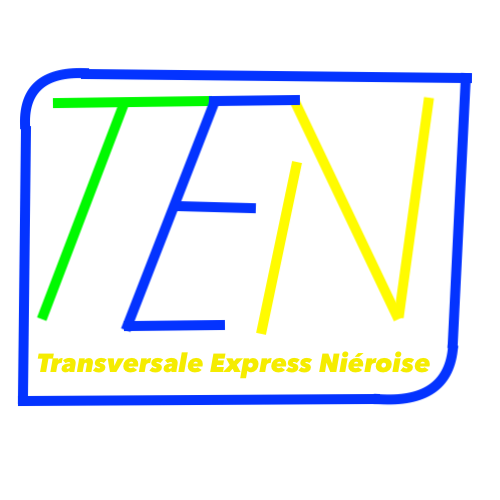

Transversale Express Niéroise

On est sur du RER ouuuu?
La Transversale Express Niéroise est une ligne de train de banlieue entièrement fictive, dans la région de la Nière (cf.Lignes de Nière), qui traverse plusieurs paysages, dans une zone assez éloignée néanmoins de Palaines. Mais cette transversale longe l'autoroute par laquelle passe la ligne autoroutière A709. Cette transversale possède 4 gares souterraines et 4 gares aériennes au 2 décembre 2024.

Galerie photos